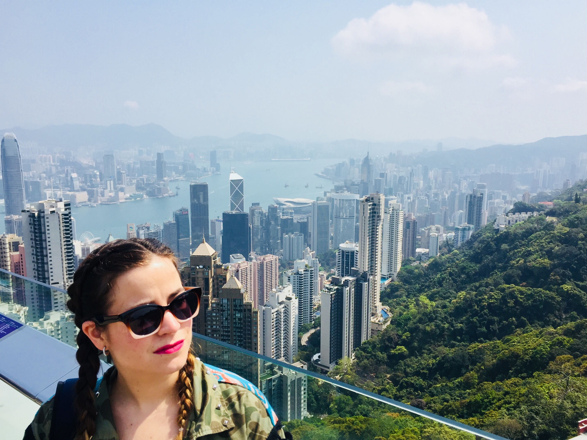
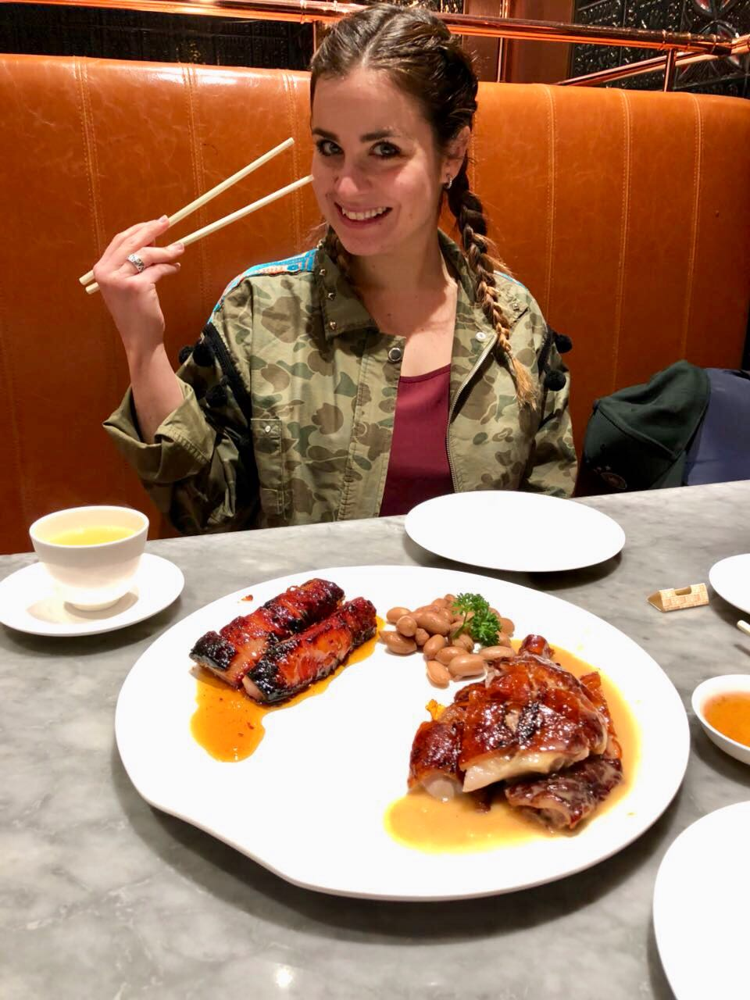
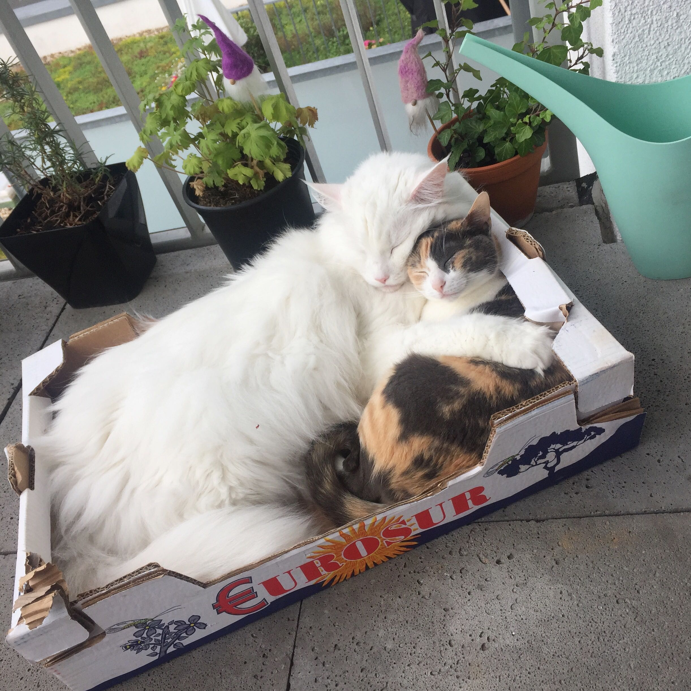

Welcome.
I am Erika, a self made professional expert in Account and Project management. Throughout my career in the travel industry and online marketing field,
I have led diverse projects to achieve organisational goals and improve the collaboration among teams.
| Universidad Complutense de Madrid |
Bachelor degree in Political Science and Public Admistration |
| 2003 - 2006 |
Political science is a social study concerning the allocation and transfer of power in decision making,
the roles and systems of governance including governments and international organizations,
political behaviour and public policies.
|
| Universitá degli Studi di Padova |
Minor in European Studies |
| 2006 - 2008 |
European studies is a field of study that focuses on current developments in European integration.
Some programmes offer a social science or public administration curriculum focusing on developments in the European Union.
|
| Digital Institute Center |
Orientation Course on Digital Marketing and Web Development |
| Course in progress |
Basic Web Development and Online Marketing trainning, including soft, hard skills and networking. |
| Trivago NV |
Senior Project Manager |
2017 - 2019 |
Trivago is a Germany based hotel meta-search platform, which aggregates hotel offerings from other OTAs and hotel chains. I have created project plans encompassing all phases of delivery, from requirements through completion.
This includes Alternative Accommodation or content topics, as well as larger projects and implementations for business toolssuchasSalesforce(CRM)andDocusign.
Deliveringontimewithinbudgetandscope,producing a positive and tangible impact into the Sales & Marketing team by reducing time loss and increasing value. |
| Monetizer |
Senior Account Development Manager |
| 2017 |
Monetizer is a revolutionary monetization platform which helps traffic sources & networks monetize their global mobile and web inventory. I managed new and current client´s affiliate marketing products and business opportunities to generate more traffic (91M daily clicks) and increase profit by excelling in planning, forecasting, setting objectives and determining course of action |
| Peakwork |
Project Manager |
| 2016 |
Peakwork creates distribution software that it licenses out to the travel value chain. It connects supply - from dozens of airlines, package suppliers, hotels, bedbanks, global distribution systems (GDSs), and other sources with distributors, online travel companies, networks, and tours-and-activities platforms. I have planned and successful executed a technical project plan for each key clients(average1M),building up revenue performance by implementing our technology. Managed, prioritized, and changed project schedules to align revenue with sales goals. |
| TripAdvisor |
Senior Account Executive |
| 2013 - 2016 |
TripAdvisor is an American travel and restaurant website company that shows hotel and restaurant reviews, accommodation bookings and other travel-related content. Proactively I pursued the development and execution of strategic account plans to preserved existing business from previous years sales by maximizing the accounts and introduce new products (1.5M annual revenue). Actively updated account plans based on changing markets, customer requirements and competitors activity |
| TripAdvisor |
Account Coordinator |
| 2012 - 2013 |
Maintained highest level of customer service, coordinate with account managers to solidify customer relations, with the major accounts. Duties included handling client questions, training customers and resolve complaints and urgencies. |
| International Media Sales |
Asap Worldwide |
| 2011 - 2012 |
ASAP Worldwide is an agency specialised in compiling high-quality business and economic country reports. I have qualified and arranged interviews with senior government officials and leading business people, present our product and negotiate advertising rates and marketing strategy on the report. Effectively monitored and motivate team members participation to ensure we consistently exceed performance expectations. |
| International Consultant |
Winne |
| 2011 |
Winne is a Global Publishing House and Market and Business Intelligence provider based on the production of practical multimedia content and advertising. I have conducted local research dealing tacfully with both lower and higher authority, producing special advertisement business reports, by engaging the key players in the country. Into detail understanding of emerging economies and comply payment terms. |
| Account Manager |
CEP Solar |
| 2009 - 2010 |
Technical Consulting CEP Solar performs exhaustive quality control of photovoltaic solar modules and components throughout the production process and before shipment helping buyers and banks to manage and reduce risk in the PV industry. I have prioritized the Market research for the Italian and Spanish photovoltaic trade, setting up a supply chain that ensured the European quality control, factory audit, purchase and consignment. |
Travel
I love traveling!

I'm a nomad. I love to discover new places and create new experiences!
I am always inspired about the next trip and its somehow also a motivation.
Foddie
Food, glorious food!

I always think that life is whats happen around the table. Food can heal, bring joy and new sensations.
Eating means basically two things to me, it´s a priviledge and a pleasure, so why not make it right?
Test it to belive it!
Simba & Tavi
Animal lover.

Simba and Tavi makes me happy everyday.
Simba is a very large and charming white Maine Coon. He loves food, that really makes him happy. He also likes long naps on his favorite cartoon box. He wakes me up very morning.
>
Tavi a very smart lady from Canary Island, Spain. She loves warm temperatures, so she loves to spend time with humans and sleep on you. She is addicted to the laser tag. She also likes to bite my plants.
Both of them were adopted.